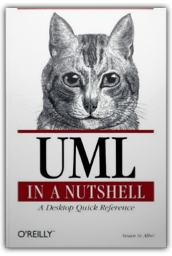
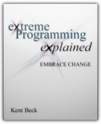
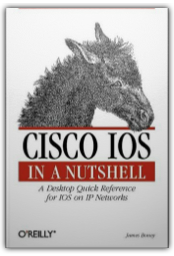
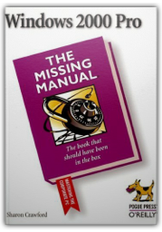

UML in a Nutshell (In a Nutshell)
Sinan Si Alhir
Modeling languages have been used by system developers for decades to specify, visualize, construct, and document systems; rough sketches using stick figures and arrows and scribbled routing conditions go back still further. But the Unified Modeling Language (UML), for the first time in the history of systems engineering, gives practitioners a common language that applies to a multitude of different systems, domains, and methods or processes. It does not guarantee project success, but enables you to communicate solutions in a consistent, standardized, and tool-supported language.
All indications suggest that the industry is rushing to the UML. Created by leading software engineering experts Grady Booch, James Rumbaugh, and Ivar Jacobson (now of Rational Software Corporation), and accepted as a standard by the Object Management Group (OMG) in 1997, the language has already achieved more success than any previous contenders. With a firm conceptual and pragmatic basis, it is well suited to supporting projects in modern languages like C++ and Java. And standardization lays the groundwork for tools as well as standard methods or processes.
This book presents the UML, including its extension mechanisms and the Object Constraint Language (OCL), in a clear reference format. For those new to the language, a tutorial quickly brings you to the point where you can use the UML. The book is concise and precise, breaking down the information along clean lines and explaining each element of the language. Introductory chapters also convey the purpose of the UML and show its value to projects and as a means for communication.
Topics include:
The role of the UML in projectsThe object-oriented paradigm and its relation to the UMLTutorial with realistic examplesAn integrated approach to UML diagramsClass and Object, Use Case, Sequence, Collaboration, Statechart, Activity, Component, and Deployment DiagramsExtension MechanismsThe Object Constraint Language (OCL)
1565924487

Extreme Programming Explained: Embrace Change
Ken Beck
Kent Beck's eXtreme Programming eXplained provides an intriguing high-level overview of the author's Extreme Programming (XP) software development methodology. Written for IS managers, project leaders or programmers, this guide provides a glimpse at the principles behind XP and its potential advantages for small to mid-sized software development teams.
The book intends to describe what XP is, its guiding principles and how it works. Simply written, the book avoids case studies and concrete details in demonstrating the efficacy of XP. Instead, the author demonstrates how XP relies on simplicity, unit testing, programming in pairs, communal ownership of code and customer input on software for to motivate code improvement during the development process. As the author notes, these principles are not new, but when combined, their synergy fosters a new and arguably better way to build and maintain software. Throughout the book, the author presents and explains these principles, such as "rapid feedback" and "play to win," which form the basis of XP.
Generally speaking, XP changes the way programmers work. The book is good at delineating new roles for programmers and managers who Beck calls "coaches." The most striking characteristic of XP is that programmers work in pairs and that testing is an intrinsic part of the coding process. In a later section, the author even shows where XP works and where it doesn't, and offers suggestions for migrating teams and organizations over to the XP process.
In the afterword, the author recounts the experiences that led him to develop and refine XP, an insightful section that should inspire any organisation to adopt XP. This book serves as a useful introduction to the philosophy and practice of XP for the manager or programmer who want a potentially better way to build software. —Richard Dragan, Amazon.com
Topics covered: Extreme Programming (XP) software methodology, principles, XP team roles, facilities design, testing, refactoring, the XP software lifecycle, adopting XP.
0201616416

Cisco IOS in a Nutshell (In a Nutshell)
James Boney
Cisco IOS in a Nutshell documents the most important bits of the frequently arcane IOS command line from aaa accounting to write, thereby providing a valuable resource to everyone who works with IOS. Three cheers for the Nutshell format! There may be no better printed style for command-line environments, like the Internetwork Operating System (IOS) that runs on Cisco Systems routers. The reference section—which makes up about 60 per cent of this book—summarises each command (again, they're not all covered, but the ones that aren't are pretty obscure) with a statement of its scope (global, interface, line, or whatever), followed by generalised syntax summaries in the style of Unix man pages (these indicate the legal combinations of switches and parameters). Then, a detailed discussion of each switch and parameter clarifies what each is for. The whole reference section is alphabetical, with lettered dark boxes on the pages' outer edges that are easy to scan while flipping pages rapidly.
Prior to the reference section, the author explains how the IOS interface refers to and controls aspects of routers, such as lines and interfaces. He does a great job of it, too—you could do far worse than to read his explanations before going to work under IOS for the first time. The other great value of this early section is in the author's discussion of how to configure a new router by bringing interfaces, data-communication protocols (like TCP/IP), routing protocols (like Border Gateway Protocol, or BGP), and services like Domain Name Service (DNS) online. This book is a tremendous value for Cisco engineers. —David Wall
Topics covered: How to configure a Cisco Systems router with the Internetwork Operating System (IOS). The most popular commands are documented, and there's a tutorial section that gets readers oriented in the Cisco way of thinking about a router's work. The author uses IOS 12.x as his baseline, though users of older versions will find his work valuable.
156592942X
Building Internet Firewalls
Elizabeth D. Zwicky D.Brent Chapman
In the vast and varied universe of computer books, a few stand out as the best of their subject areas. Building Internet Firewallsis one of these. It's deep, yet carefully focused, so that almost anything you might want to know about firewall strategies for protecting networks is here. Plus, there's a lot of information on the reasons we build firewalls in the first place, which is to say the security risks that come with Internet connectivity. You'll learn a great deal about Internet services and the protocols that provide them as you follow this book's recommendations for stifling attacks.
If there's a shortcoming to this book, it is its lack of coverage of the turnkey firewall products that are becoming popular among homes and small office users. Emphasis here is on more complicated network defences that require careful design and setup—both design and implementation are the order of the day here. The authors carefully enumerate the threats they see in various situations, go into some detail on how those threats manifest themselves, and explain what configuration changes you can make to your perimeter defences to repulse those threats. Plenty of illustrations make points about good and bad security strategies (you want to put the routers hereand here, not hereor here). You'll learn a lot, no matter how much experience you have, by reading this book cover to cover. —David Wall, Amazon.com
Topics covered: Means of protecting private networks from external security threats. The authors go into detail on attackers' means of exploiting security holes in common Internet services, and show how to plug those holes or at least limit the damage that can be done through them. With coverage of Unix, Linux, and Windows NT, the authors detail their philosophies of firewall design and general security policy.
1565928717
|
Writing Effective Use Cases (Crystal Series for Software Development)
Alistair Cockburn
Alistair Cockburn's Writing Effective Use Casesis an approachable, informative, and very intelligent treatment of an essential topic of software design. "Use cases" describe how "actors" interact with computer systems and are essential to software-modelling requirements. For anyone who designs software, this title offers some real insight into writing use cases that are clear and correct and lead to better and less costly software.
The focus of this text is on use cases that are writtenas opposed to modelled in UML. This book may change your mind about the advantages of writing step-by-step descriptions of the way users (or actors) interact with systems. Besides being an exceptionally clear writer, the author has plenty to say about what works and what doesn't when it comes to creating use cases. There are several standout bits of expertise on display here, including excellent techniques for finding the right "scope" for use cases. (The book uses a colour scheme in which blue indicates a sea-level use case that's just right while higher-level use cases are white and over-detailed ones are indigo. It also provides notational symbols to document these levels of detail within a design.)
This book contains numerous tips on the writing style for use cases and plenty of practical advice for managing projects that require a large number of use cases. One particular strength lies in the numerous actual use cases (many with impressive detail) borrowed from real-world projects that demonstrate both good and bad practices. Even though the author expresses a preferences for the format of use cases, he presents a variety of styles, including UML graphical versions. The explanation of how use cases fit into the rest of the software engineering process is especially good. The book concludes with several dozen concrete tips for writing better use cases.
Software engineering books often get bogged down in theory. Not so in Writing Effective Use Cases, a slender volume with a practical focus, a concise presentation style, and something truly valuable to say. This book will benefit most anyone who designs software for a living. —Richard Dragan
0201702258

Windows 2000 Pro: The Missing Manual
David Pogue Sharon Crawford
Promising to help its readers master the corporate personal computer, Windows 2000 Pro: The Missing Manualexplains Microsoft Windows 2000 Professional (the operating system that's meant to replace Windows NT Workstation) to the people who use it. Author Sharon Crawford does a fine job of showing how to get Windows 2000 Professional to do what you want and with the best performance possible. Buy and enjoy this book if you want to understand your work machine as well as you know your home computer, or if you just want an easy-to-read reference to help you figure out new Windows challenges as they pop up.
This book—like most of its Pogue Press littermates—distinguishes itself by the way it deals with its subject software's deviations from common sense. In a model sidebar, Crawford explains why the Permissions window allows you to set both Deny and Allow permissions on a resource. She aptly explains why not allowing access isn't the same as denying access, and similarly focuses light on other confusing details of Windows 2000 Professional. This approach to software and its quirks is what makes this book different from the (many) other "How to Use Windows 2000 Professional" books on the market. Let's hope that Pogue Press continues to steer its writers away from ponderous documentation whose structure is dictated by menu contents. Books like this are fresh air in a genre that invites drudgery. —David Wall
Topics covered:Windows 2000 Professional for the people who use it. Beginning with the barest essentials (logging on and starting programs), this book proceeds through local area network (LAN) and Internet connectivity, hardware administration and security. Mostly, this is an introductory text, but it covers the operating system thoroughly at the user (as opposed to administrator or programmer) level.
0596000103
|


 Made with Delicious Library
Made with Delicious Library